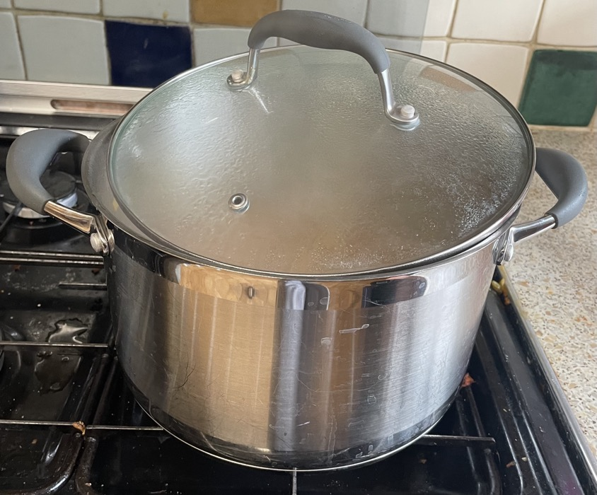

Potato & chickpea curry
- If heat is higher than the lowest then stir every 2 mins or will burn
- Fry on high heat till seeds start to crackle
- 3 tbsp vegetable oil
- ½ tsp mustard seeds
- 1 tsp cumin seeds
- Add and cook for 5 mins
- 2 large onions
- 30g ginger
- 2 green chillies
- Add and cook for 5 mins till onion is soft
- 2 tsp ground coriander
- 2 tsp garam masala
- 1 tsp ground turmeric
- ¼ tsp mild chilli powder
- Add and simmer for 45 mins till potatoes cooked (needs to be hot enough to cook potatoes)
- 1 tin chickpeas
- 1 tin tomatoes
- 600g (after peeling) potatoes cut into bite size chunks
- 1 tsp sugar
- 200ml water & ¼ stock cube
- spinach stalks chopped
- Add
- 100g spinach stalks removed
- Add to taste
- 2 tsp lemon juice
- salt
- fresh coriander chopped (optional)
Serving
- Rice, bread, mango chutney, tandoori chicken
- 4 portions
Notes
- Made: 5 Apr 2023, Aug 2023
- Potatoes disintegrate after freezing
- Use big pot so easier to stir

